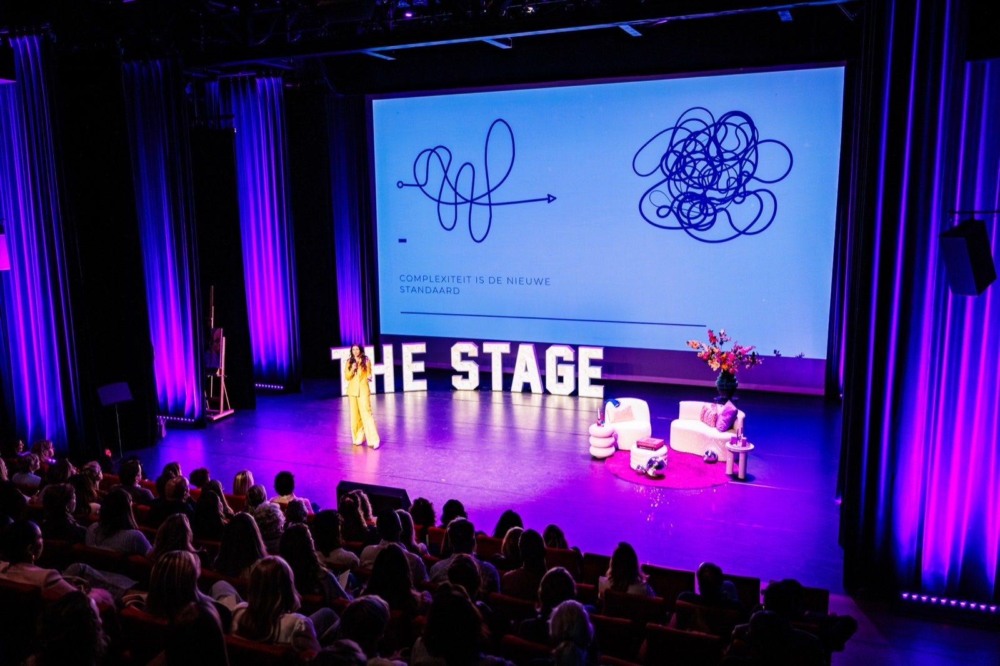

01
Congressen & events
Als dagvoorzitter of moderator
Van plenaire opening tot paneldiscussie — zoals de L&D-sessies bij Rabobank. Ik verbind de sprekers, bewaak de rode draad en zorg dat de zaal aan het eind weet wat ze ermee moeten.
Waarom Karin
Een congres, een kick-off of een traject met je team: het levert bijna altijd een goed gevoel op. Dat is mooi, maar een week later werkt iedereen weer precies zoals daarvoor. Ik zorg dat er iets blijft hangen — scherpe inhoud op het moment zelf, en gedrag dat écht verandert zodra iedereen weer achter z'n bureau zit.
Karin is een geweldig professionele dagvoorzitter! Ik werk meer dan graag met haar samen. Super aanbevolen!
Vijf redenen
Ik ben veranderkundige met een fascinatie voor AI. Dat is de combinatie die ontbreekt bij de meeste AI-verhalen: niet de tool staat centraal, maar het gedrag eromheen. Daarom beklijft het.
Geen theorie voor later. Of het nu één sessie is of een traject van maanden: mensen gaan weg met iets dat ze morgen al gebruiken — vaak zelfs met hun eerste werkende oplossing.
Ook de mensen achterin met de armen over elkaar. Juist bij AI zit er twijfel en weerstand. Ik neem die serieus in plaats van eroverheen te praten — en dat is precies waar de omslag zit.
Ik houd het tempo erin en stel de vraag die iedereen denkt maar niemand stelt. Bij een zaal van driehonderd net zo goed als bij een team van acht. En zonder dat het een show over mij wordt — jullie verhaal staat centraal.
Ik duik vooraf in jullie organisatie, jargon en gevoeligheden. Dat merk je meteen: de voorbeelden gaan over jullie werk, niet over een willekeurig bedrijf uit een boek.
Voor welke momenten
Als dagvoorzitter of moderator
Van plenaire opening tot paneldiscussie — zoals de L&D-sessies bij Rabobank. Ik verbind de sprekers, bewaak de rode draad en zorg dat de zaal aan het eind weet wat ze ermee moeten.
Als keynotespreker
De keynote Het leven is te kort voor later: waarom zijn we zo druk, terwijl we allemaal dezelfde 24 uur hebben? Confronterend, grappig en met een concreet handelingsperspectief.
Als begeleider van een traject
Voor als één dag niet genoeg is. Ik begeleid teams om agentic te werken: AI-agents die meedraaien in jullie processen, in plaats van weer een tool erbij.

Eerlijke vraag
Terechte vraag. Je kunt het ook zelf doen, of een collega laten spreken. Maar er zijn vier dingen die van binnenuit bijna niet lukken:
Zo werkt het
Een gesprek van een half uur. Wat is het moment, wie zitten er in de groep, en wat moet er daarna anders zijn? Vrijblijvend.
Je krijgt een helder voorstel met opzet, rol en tarief. Geen verrassingen achteraf.
Ik verdiep me in jullie organisatie en stem af met iedereen die een rol heeft. Zodat het verhaal van jullie is, niet van mij.
Ik neem het over — of dat nu één ochtend is of een reeks sessies. Jullie kunnen je richten op de inhoud en op elkaar.
Ervaringen
Tijdens onze reflectiesessies heeft Karin ons op inspirerende wijze begeleid met werkvormen die onze way of working versterken. Haar aanpak was goed afgestemd op onze behoeften als team: meer focus op onze doelen en een duidelijker tijdspad met strakkere deadlines. Een aanrader voor teams die willen groeien in samenwerking en resultaatgericht werken.
Ik gun écht iedereen de AI-workshop die je hebt gegeven. Eindelijk iets leren wat direct toepasbaar is in je werk — deskundig, professioneel en vooral ook leuk.
Boek mij
Stuur me het moment dat je in gedachten hebt — een congres, een kick-off of een traject met je team. Je hoort binnen een dag of ik beschikbaar ben en of ik de juiste ben. Zo niet, dan denk ik mee over wie dat wél is.
Keynote, dagvoorzitterschap, moderatie, workshop of een langer traject — app, mail of bel gerust.